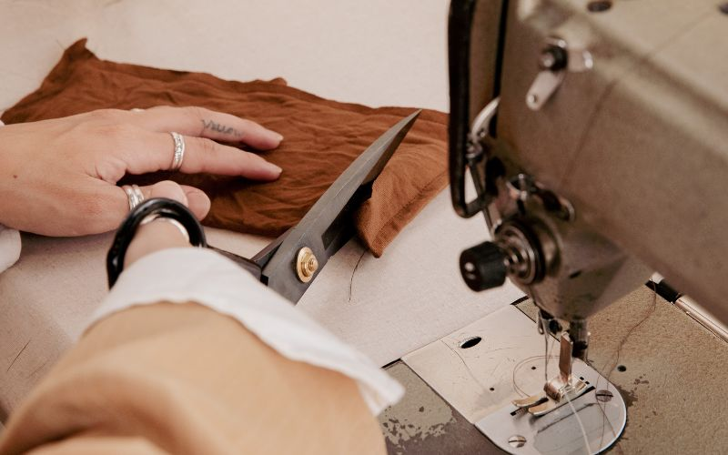
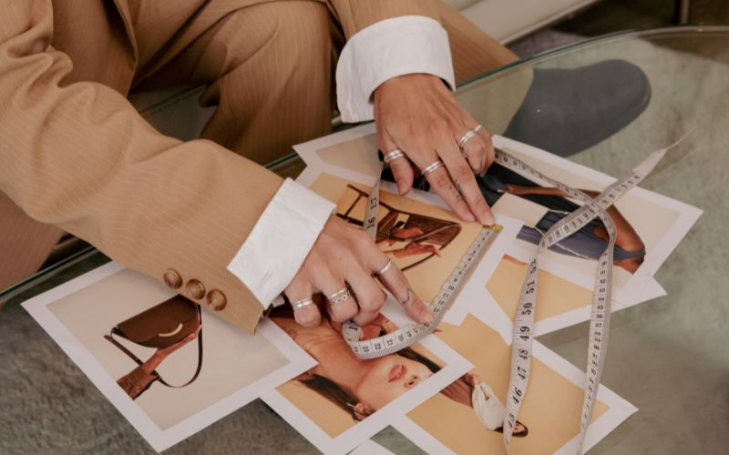
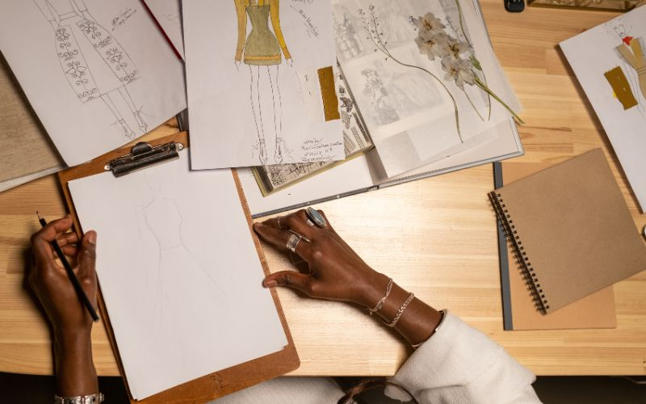
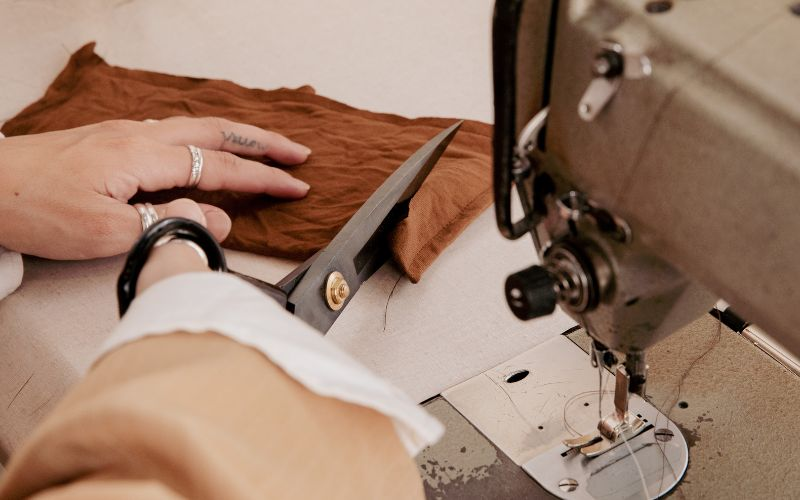
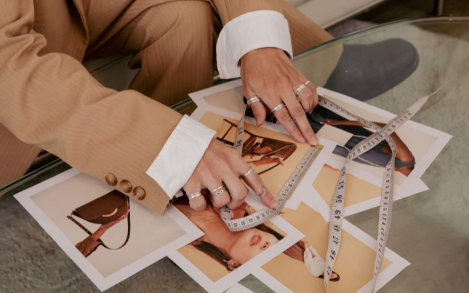
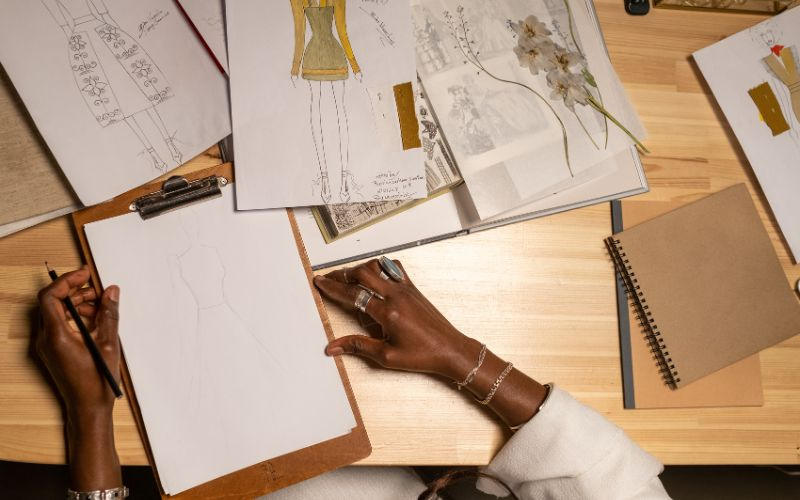

Khởi nguồn cảm hứng
Mỗi thương hiệu đều được sinh ra từ một hạt mầm nhỏ bé, và với V & Đ, hạt mầm ấy là tình yêu bất tận dành cho thời trang. Từ những ngày còn ngồi trên ghế nhà trường, tôi đã có niềm vui đặc biệt khi tự phối những món đồ giản dị để tạo ra phong cách riêng. Niềm hạnh phúc lớn nhất khi đó không phải là được mặc đẹp, mà là nhìn thấy ánh mắt ngạc nhiên và sự ngưỡng mộ từ bạn bè, khi họ nhận ra rằng chỉ cần một chút sáng tạo, quần áo có thể mang lại sự tự tin vô cùng. Bước ngoặt đến vào một buổi chiều, khi tôi vô tình tìm thấy một chiếc áo cũ trong tủ đồ của mẹ. Chiếc áo ấy không đơn giản chỉ là một món đồ, mà nó còn gói gọn trong đó cả một phần ký ức, cả một câu chuyện. Khi cầm nó trên tay, tôi bỗng nhận ra: thời trang không chỉ là trang phục để khoác lên người, mà còn là cách để lưu giữ cảm xúc, ghi lại những khoảnh khắc, và kể nên câu chuyện riêng của mỗi người. Chính giây phút ấy, tôi biết mình muốn tạo nên một thương hiệu – một nơi gửi gắm đam mê và lan tỏa thông điệp “Thời trang là ngôn ngữ của ký ức và sự tự tin.”


 




